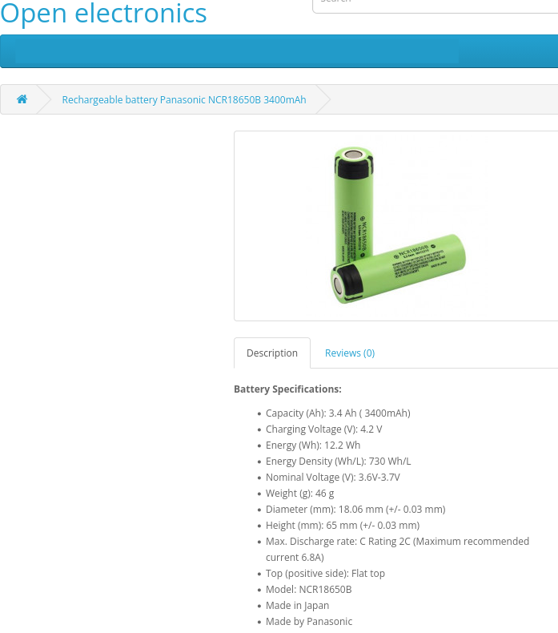

Parte 1 - Cálculo do Consumo Energético
Overview - Componentes
Sensores:
- MAX30001
- MLX90614
- GSR
- MAX30100
- MPU6050 \text{Wh}
Base:
- ESP32-Mini
Bateria:
- Panasonic NCR18650B 3400mah
Premissas Técnicas
| Componente / Parâmetro | Propriedade | Valor |
|---|---|---|
| ESP-32 – Comunicação Wi-Fi | Tensão de operação | 3,3 V |
| Corrente média Wi-Fi ativa | 160 mA | |
| Corrente em idle | 50 mA | |
| Percentual de tempo Wi-Fi ativo | 40% | |
| Tempo de operação | 24 horas | |
| Nota de transmissão | Envio frequente para a nuvem a cada medição | |
| Wearables (Valores unitários) | Quantidade total | 5 unidades |
| Tensão de operação | 3,7 V | |
| Corrente média | 20 mA | |
| Operação | Contínua |
Parâmetros básicos e bateria
Bateria Panasonic NCR18650B:
- capacidade nominal \(C = 3{,}4\ \text{Ah} = 3400\ \text{mAh}\)
- tensão nominal \(V_{\text{bat}} \approx 3{,}6\text{–}3{,}7\ \text{V}\).
- A energia nominal é então \(\approx 12{,}2\ \text{Wh}\)
\(E_{\text{nom}} = V_{\text{bat}} \cdot C \approx 3{,}6 \cdot 3{,}4 \approx 12{,}2\ \text{Wh}\), em linha com a ficha que indica \(12{,}2\ \text{Wh}\).

openelectronicsPara “capacidade útil” vamos assumir 90% de uso (margem para profundidade de descarga e perdas de conversão), dando \(E_{\text{útil}} \approx 0{,}9 \cdot 12{,}2 \approx 11{,}0\ \text{Wh}\).
Potência média dos dispositivos (kW)
ESP32‑Mini
- Dados: \(V_{\text{ESP}} = 3{,}3\ \text{V}\)
- Wi‑Fi: \(I_{\text{wifi}} = 160\ \text{mA} = 0{,}160\ \text{A}\)
- idle: \(I_{\text{idle}} = 50\ \text{mA} = 0{,}050\ \text{A}\)
- tempo com Wi‑Fi ativo: 40 %, idle 60 %.
Potência instantânea em cada modo (lei básica \(P = V \cdot I\)):
\[ P_{\text{wifi}} = 3{,}3 \cdot 0{,}160 = 0{,}528\ \text{W} \]
\[ P_{\text{idle}} = 3{,}3 \cdot 0{,}050 = 0{,}165\ \text{W} \]
Potência média ponderada pelos tempos:
\[ P_{\text{wifi,med}} = 0{,}4 \cdot 0{,}528 = 0{,}2112\ \text{W} \]
\[ P_{\text{idle,med}} = 0{,}6 \cdot 0{,}165 = 0{,}099\ \text{W} \]
\[ P_{\text{ESP,med}} = P_{\text{wifi,med}} + P_{\text{idle,med}} \approx 0{,}3102\ \text{W} \]
Em kW:
\[ P_{\text{ESP,med}} \approx 0{,}0003102\ \text{kW} \]
Cada wearable
Cada wearable opera a \(V_{\text{wear}} = 3{,}7\ \text{V}\) e \(I_{\text{wear}} = 20\ \text{mA} = 0{,}020\ \text{A}\), 100 % do tempo.
\[ P_{\text{wear}} = 3{,}7 \cdot 0{,}020 = 0{,}074\ \text{W} = 0{,}000074\ \text{kW} \]
Total do sistema por paciente
Um paciente: \(1\) ESP32 + \(5\) wearables.
\[ P_{\text{5wear}} = 5 \cdot 0{,}074 = 0{,}37\ \text{W} \] \[ P_{\text{total}} = P_{\text{ESP,med}} + P_{\text{5wear}} \approx 0{,}3102 + 0{,}37 = 0{,}6802\ \text{W} \] \[ P_{\text{total}} \approx 0{,}0006802\ \text{kW} \]
Para 1 000 pacientes simultâneos: \[ P_{\text{1000}} = 1000 \cdot 0{,}6802 \approx 680{,}2\ \text{W} \approx 0{,}6802\ \text{kW} \]
Energia consumida (kWh) – por dia, mês e ano
Usando \(E = P \cdot t\), com \(P\) em kW e \(t\) em horas, a energia sai em kWh.
ESP32‑Mini
Potência média: \(P_{\text{ESP,med}} \approx 0{,}0003102\ \text{kW}\).
- Dia (\(t = 24\ \text{h}\)): \[ E_{\text{ESP,dia}} = 0{,}0003102 \cdot 24 \approx 0{,}00744\ \text{kWh/dia} \]
- Mês (30 dias): \[ E_{\text{ESP,mês}} \approx 0{,}00744 \cdot 30 \approx 0{,}223\ \text{kWh/mês} \]
- Ano (365 dias): \[ E_{\text{ESP,ano}} \approx 0{,}00744 \cdot 365 \approx 2{,}72\ \text{kWh/ano} \]
Cada wearable
Potência: \(P_{\text{wear}} = 0{,}000074\ \text{kW}\).
- Dia: \[ E_{\text{wear,dia}} = 0{,}000074 \cdot 24 \approx 0{,}00178\ \text{kWh/dia} \]
- Mês (30 dias): \[ E_{\text{wear,mês}} \approx 0{,}00178 \cdot 30 \approx 0{,}0533\ \text{kWh/mês} \]
- Ano (365 dias): \[ E_{\text{wear,ano}} \approx 0{,}00178 \cdot 365 \approx 0{,}65\ \text{kWh/ano} \]
Total por paciente (1 ESP32 + 5 wearables)
- Dia: \[ E_{\text{pac,dia}} = E_{\text{ESP,dia}} + 5 \cdot E_{\text{wear,dia}} \approx 0{,}00744 + 5 \cdot 0{,}00178 \approx 0{,}0163\ \text{kWh/dia} \]
- Mês: \[ E_{\text{pac,mês}} \approx 0{,}223 + 5 \cdot 0{,}0533 \approx 0{,}49\ \text{kWh/mês} \]
- Ano: \[ E_{\text{pac,ano}} = E_{\text{ESP,ano}} + 5 \cdot E_{\text{wear,ano}} \approx 2{,}72 + 5 \cdot 0{,}65 \approx 29{,}8\ \text{kWh/ano} \]
Total para 5 pacientes (5 Wearables)
Multiplicamos por 5.
- Dia: \[ E_{\text{5,dia}} = 5 \cdot 0{,}0163 \approx 0{,}0815\ \text{kWh/dia} \]
- Mês: \[ E_{\text{5,mês}} \approx 5 \cdot 0{,}49 \approx 2{,}45\ \text{kWh/mês} \]
- Ano: \[ E_{\text{5,ano}} \approx 5 \cdot 29{,}8 \approx 149\ \text{kWh/ano} \]
Total para 1 000 pacientes (5 Wearables)
Multiplicamos por 1 000.
- Dia:
\[ E_{\text{1000,dia}} = 1000 \cdot 0{,}0163 \approx 16{,}3\ \text{kWh/dia} \] - Mês:
\[ E_{\text{1000,mês}} \approx 1000 \cdot 0{,}49 \approx 490\ \text{kWh/mês} \] - Ano:
\[ E_{\text{1000,ano}} \approx 1000 \cdot 5{,}96 \approx 5{,}96\ \text{MWh/ano} \]
Parte 2 - Emissões de CO2
Emissões de CO₂ associadas (kg)
Fator fornecido: \(0{,}08\ \text{kg CO₂/kWh}\), compatível com a ordem de grandeza de fatores médios da matriz elétrica brasileira (cerca de 0,055–0,06 kg CO₂/kWh em anos recentes, dependendo da fonte e do ano).
Emissões por paciente
\[ \text{CO}_{2,\text{pac,ano}} = E_{\text{pac,ano}} \cdot 0{,}08 \approx 5{,}96 \cdot 0{,}08 \approx 0{,}48\ \text{kg CO}_2\text{/ano} \]
Ou seja, menos de meio quilo de CO₂ por paciente por ano para manter o sistema 24 h/dia.
Emissões para 5 pacientes
\[ \text{CO₂}_{\text{5,ano}} = 5 \cdot 0{,}48 = 2{,}4\ \text{kg CO₂/ano} \]
Emissões para 1 000 pacientes
\[ \text{CO₂}_{\text{1000,ano}} = 1000 \cdot 0{,}48 \approx 480\ \text{kg CO₂/ano} \approx 0{,}48\ \text{t CO₂/ano} \]
Percentual de consumo do Wi‑Fi no ESP32
A pergunta é “O Wi‑Fi representa qual porcentagem do consumo do ESP32?”. Como a tensão é a mesma nos dois modos, a fração pode ser calculada pela potência média em Wi‑Fi sobre a potência média total.
\[ \text{fração}_{\text{wifi}} = \frac{P_{\text{wifi,med}}}{P_{\text{ESP,med}}} = \frac{0{,}2112}{0{,}3102} \approx 0{,}68 \]
Logo, o Wi‑Fi responde por aproximadamente \(68\ %\) do consumo médio do ESP32, mesmo ficando apenas 40 % do tempo ativo. A parte em idle (60 % do tempo) responde pelos outros \(32\ %\) do consumo do ESP32.
Autonomia com a bateria NCR18650B
Autonomia em operação contínua: \(t = \dfrac{E}{P}\), usando a potência média total do paciente.
- Com energia nominal (12,2 Wh):
\[ t_{\text{nom}} = \frac{12{,}2}{0{,}6802} \approx 18\ \text{h} \] - Com energia útil (90 %, \(E_{\text{útil}} \approx 11{,}0\ \text{Wh}\)):
\[ t_{\text{útil}} = \frac{11{,}0}{0{,}6802} \approx 16\ \text{h} \]
Ou seja, com uma única célula NCR18650B o sistema típico (1 ESP32 + 5 wearables) não chega a 24 h de operação contínua; seriam necessárias mais células em paralelo ou recarga antes de um dia completo. Isso é uma implicação direta de \(P_{\text{total}} \approx 0{,}68\ \text{W}\) contra \(E_{\text{útil}} \approx 11\ \text{Wh}\).
Comparação com consultas presenciais semanais
Aqui precisamos explicitar hipóteses de deslocamento. Vou usar uma hipótese simples e relativamente conservadora para mostrar a escala de emissões.
Hipóteses adotadas
- 1 consulta presencial por semana por paciente.
- Deslocamento de ida e volta: \(d = 20\ \text{km}\) (10 km para ir, 10 km para voltar).
- Meio de transporte A: carro a gasolina “médio”, com fator de emissão \(\approx 0{,}174\ \text{kg CO₂/km}\), valor típico de inventários internacionais para carros de passeio.
- Meio de transporte B: ônibus urbano, com emissões per capita cerca de 16 % das de um automóvel, segundo estudos da CNT sobre emissões por passageiro.
Dessa forma, fator de emissão por passageiro‑km no ônibus:
\[
f_{\text{bus}} \approx 0{,}16 \cdot 0{,}174 \approx 0{,}028\ \text{kg CO₂/pax}\cdot\text{km}
\]
Emissões anuais por paciente – carro
Distância anual:
\[
d_{\text{ano}} = d \cdot 52 = 20 \cdot 52 = 1040\ \text{km/ano}
\]
Emissões anuais por paciente, carro:
\[
\text{CO₂}_{\text{carro,pac}} = d_{\text{ano}} \cdot f_{\text{carro}}
= 1040 \cdot 0{,}174 \approx 181\ \text{kg CO₂/ano}
\]
Comparando com o sistema IoT (\(\approx 0{,}48\ \text{kg CO₂/ano}\)): o deslocamento semanal de carro emite quase 380 vezes mais CO₂ por paciente do que manter a solução remota 24 h/dia.
Emissões anuais por paciente – ônibus
Emissões anuais por paciente, ônibus:
\[
\text{CO₂}_{\text{bus,pac}} = d_{\text{ano}} \cdot f_{\text{bus}}
\approx 1040 \cdot 0{,}028 \approx 29\ \text{kg CO₂/ano}
\]
Mesmo usando transporte coletivo, com pegada por passageiro muito menor que a do carro, as emissões ainda são quase duas ordens de grandeza maiores que as da solução IoT (29 kg vs 0,48 kg por ano).
Escala para 5 pacientes
- Carro:
\[ \text{CO₂}_{\text{carro,5}} \approx 5 \cdot 181 = 905\ \text{kg CO₂/ano} = 0{,}905\ \text{t CO₂/ano} \] - Ônibus:
\[ \text{CO₂}_{\text{bus,5}} \approx 5 \cdot 29 = 145\ \text{kg CO₂/ano} = 0{,}145\ \text{t CO₂/ano} \] - Sistema IoT: \(\approx 2{,}4\ \text{kg CO₂/ano}\).
Mesmo no cenário favorável (tudo de ônibus, distância moderada), as consultas presenciais semanais emitem centenas de quilos de CO₂ por ano para 5 pacientes, contra menos de meia dezena de quilo de CO₂ da solução IoT contínua.
Escala para 1 000 pacientes
- Carro:
\[ \text{CO₂}_{\text{carro,1000}} \approx 1000 \cdot 181 = 181,000\ \text{kg CO₂/ano} = 181\ \text{t CO₂/ano} \] - Ônibus:
\[ \text{CO₂}_{\text{bus,1000}} \approx 1000 \cdot 29 = 29,000\ \text{kg CO₂/ano} = 29\ \text{t CO₂/ano} \] - Sistema IoT: \(\approx 0{,}48\ \text{t CO₂/ano}\).
Mesmo no cenário favorável (tudo de ônibus, distância moderada), as consultas presenciais semanais emitem dezenas de toneladas de CO₂ por ano para 1 000 pacientes, contra menos de 1 tonelada da solução IoT contínua.
Fechamento e Conclusão
Qual é a emissão de CO2 por paciente por ano?
R: gera algo em torno de \(0{,}48\ \text{kg de CO₂/ano}\),
o que dá aproximadamente \(6\ \text{kWh/ano}\) e usando \(0{,}08\ \text{kg CO₂/kWh}\).
Resposta
Qual seria a emissão para 1.000 pacientes simultâneos?
R: Por paciente, o sistema consome em média cerca de \(0{,}68\ \text{W}\)
Resposta
O Wi-Fi representa qual porcentagem do consumo do ESP-32?
A solução é sustentável quando escalada?
Resposta
Como você interpreta que esta solução se compara, do ponto de vista de emissão de CO2, a consultas presenciais semanais?
Resposta
Por paciente, o sistema consome em média cerca de \(0{,}68\ \text{W}\), o que dá aproximadamente \(6\ \text{kWh/ano}\) e gera algo em torno de \(0{,}48\ \text{kg de CO₂/ano}\) usando \(0{,}08\ \text{kg CO₂/kWh}\). Para 1 000 pacientes, isso corresponde a cerca de \(6\ \text{MWh/ano}\) e \(0{,}48\ \text{t de CO₂/ano}\), muito abaixo das emissões típicas de deslocamentos semanais de carro ou ônibus para consultas presenciais.
A solução é sustentável quando escalada?
Pelos números de energia, o sistema IoT é extremamente “leve” em consumo: cerca de \(6\ \text{kWh/ano}\) por paciente, equivalente a deixar uma lâmpada de LED de 6 W ligada 1 000 horas em um ano, algo marginal dentro do consumo residencial típico. Em emissões, isso se traduz em aproximadamente \(0{,}48\ \text{kg CO₂/ano}\) por paciente, o que é menor que as emissões de uma única viagem curta de carro.
Quando escalado para 1 000 pacientes, o consumo fica por volta de \(6\ \text{MWh/ano}\), com menos de meia tonelada de CO₂, enquanto a alternativa de consultas presenciais semanais gera da ordem de 30 t (ônibus) a 180 t (carro) de CO₂ por ano apenas com deslocamento, sob hipóteses de distância moderada. Em outras palavras, do ponto de vista de emissões operacionais de uso (não estou considerando fabricação dos dispositivos), a solução IoT é fortemente sustentável e ainda reduz emissões globais se substitui consultas presenciais frequentes.
Fontes:
matriz elétrica brasileira - epe.gov
valor típico de emissão para carro de passeio - climatiq
emissões de passageiro (CNT) - revistaautobus.com
especificações da bateria I - openelectronics
especificações da bateria II - lygte-info